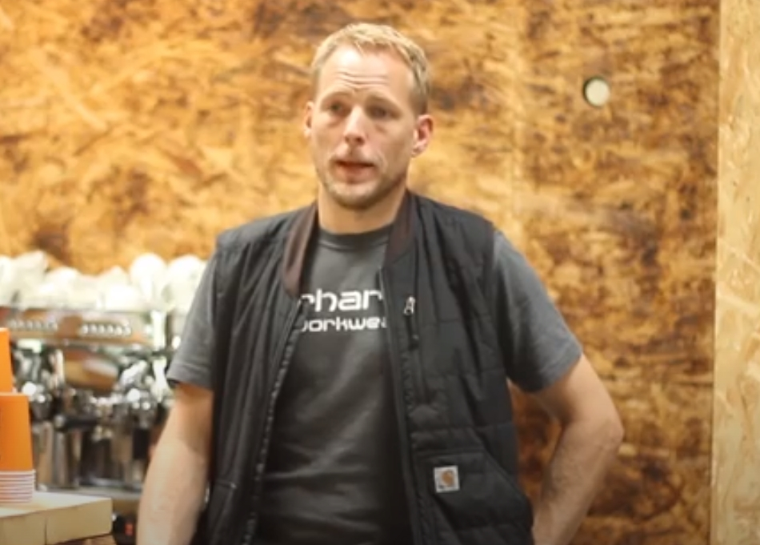
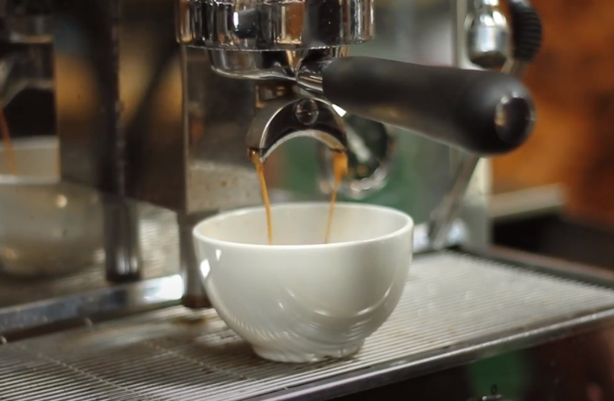
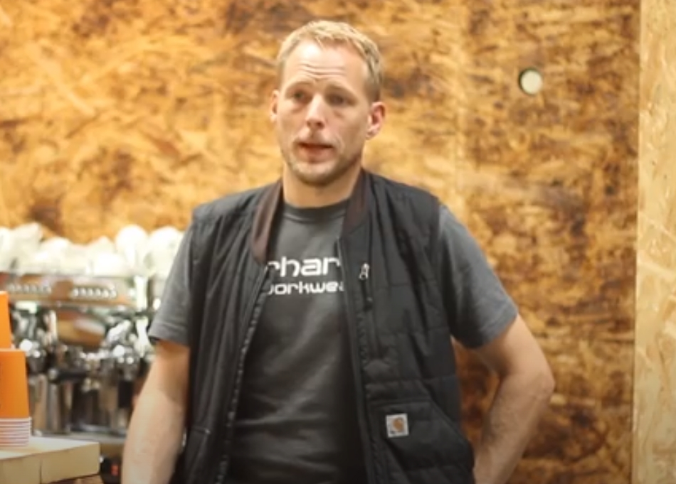
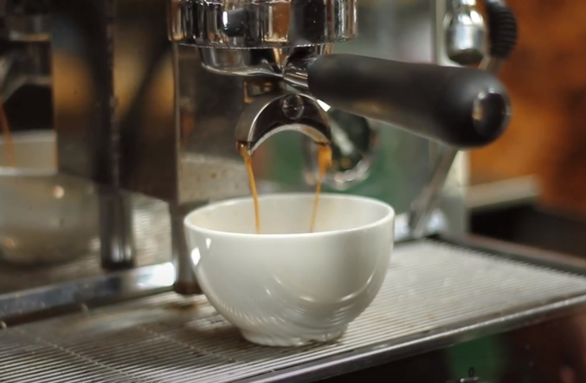
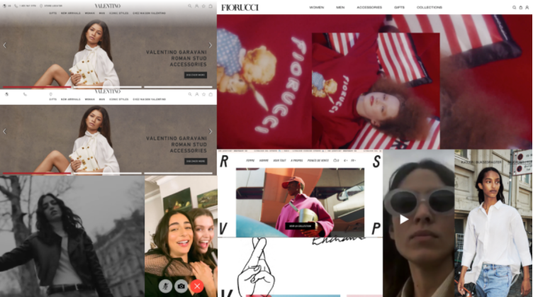
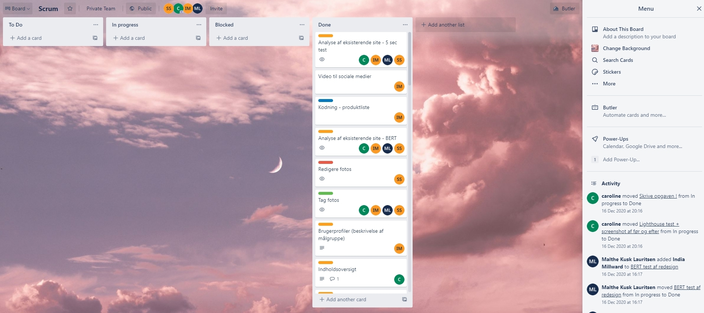
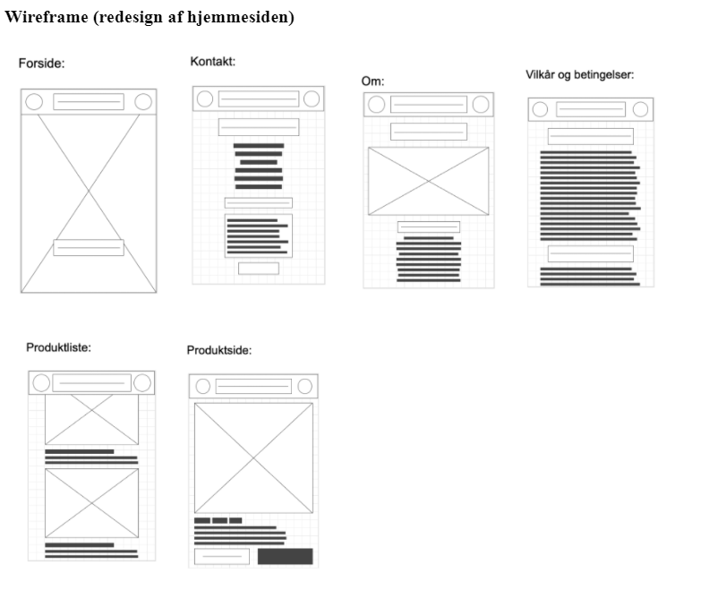
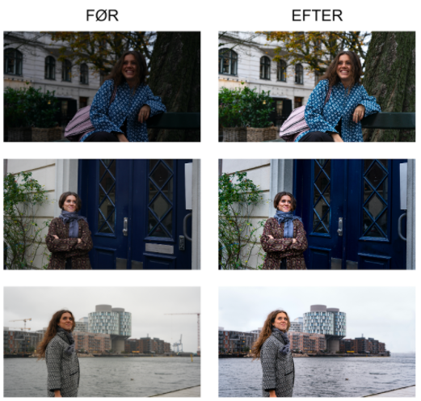

Teori, Metoder og teknikker
I begyndelsen af dette tema lærte vi om ophavsret af digital medieproduktion, herunder, hvordan vi skaber medieproduktion som fastholder os indenfor lovens rammer. Det var ekstrem nyttigt for mig at få lært dette, da jeg altid har været usikker omkring det, og jeg var samtidig også i chok over hvor meget forsigtighed det kræver at overholde lovene indenfor ophavsret.I temaet blev vi også sat ind i hvad vores rolle som multimediedesignere er for virksomheder (værdikæden). Jeg synes det gav en grundlæggende forståelse for hvilket indflydelse vi har på virksomheder, og hvor vi kan benytte os af vores færdigheder og kompetencer til virksomhedernes problematikker. I forlængelse af dette fik vi også indblik i vigtigheden af sociale medier og de forskellige platforme hvor man kan publicere sit indhold, som f.eks. YouTube.
Sidst forsøgte vi os frem med nogle små redigeringsopgaver hvor vi skulle redigere videoer og billeder, ved brug af Premier pro og photoshop. I forlængelse af dette blev vi undervist i forskellige kameravinkeler ogindflydelse af B-rolls (med et pragteksemplar fra filmen Birdman).
I temaet lærte vi også om de forskellige filtyper alt fra aiff. til h-264 filformater. Jeg vil tilføje, at jeg aldrig har vidst at man kunne udnytte RAW formatet så meget til at manipulere med farverne og eksponeringen (Tak).


 



Pilotprojekt
I dette projekt arbejdede jeg sammen med en medstuderende. Vi valgte at arbejde med en af mine kammerater som jeg plejer at spille på hold med. Som tidligere nævnt havde vi allerede fået viden omkring Adobe Premier, behandling af lyd, klipning og beskæringer fra en tidligere opgave. Man forstår først vigtigheden af klipningen og B-Rolls når man selv skal til at klippe en film sammen. Herunder anvendte jeg også meget forskellige kamera vinkler, som vi også blev undervist i. Denne opgave tillader os at gå fra teori til praksis, i og med, at alt som blev gennemgået for klassen blev brugt i denne opgave. Med det sagt, så var balancen mellem teori og det praktiske veludført af vejlederene, og jeg fik udvidet mine kompetencer i tværfaglig arbejdsprocessor i udvikling af digitalt indhold. Det færdige resultat kan ses i højre kolonne.Redesign og Temadokumentation
   I dette projekt redesignede vi en selvvalgt hjemmeside (Redesign hjemmesiden) Jeg synes uden tvivl at det her projekt var det mest lærrig i hele 1. Semester. Kombinationen af videoproduktion, grafiskarbejde, kodning og gruppearbejde var helt perfekt.
Til at starte med planlagde vi hele forløbet på en overskuelig måde. Vi havde allerede fra tidligere temaer og dette tema fået redskaber til at kunne udføre en struktureret planlægning. Det samme gælder for idégenerering af hvordan redesignet og temaet for vores nye side skulle se ud. Til idegenerering og valg af tema brugte vi sitemaps, styletile, inspirationskilder, Moodboard, prototyper og wireframes. Jeg vil mene at det mest brugbare element til netop valg af tema, var helt klart de videoer som inspiration og prototyper. Til planlægning og strukturering af gruppearbejdet og projektet så var wireframe, layoutdesign, Trello og GitHub helt aldeles afgørende for det afsluttede produkt.
Før redesignet og efter redesignet udførte vi en BERT og 5 sec-test, for at få en idé om design og effektivitet af før/efter redesign. Til redesignet udførte vi også et interview, hvor vi benyttede os af interviews guides, som vi blev undervist i, og kombineret med indstillingerne på kameraet (blænde, lukkertid og ISO) som vi blev præsenteret for, fik vi de helt perfekte billeder og videoer.(Hele opgaven)